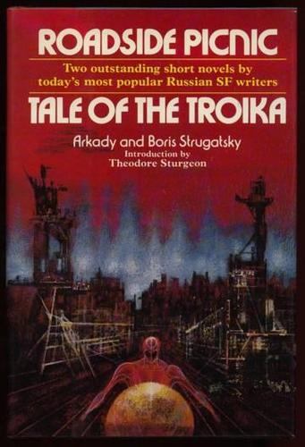
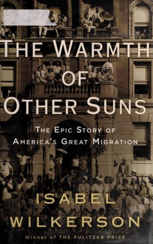
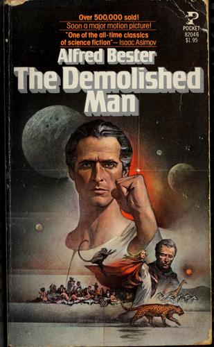
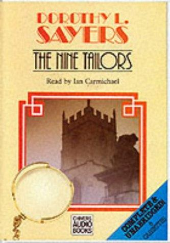
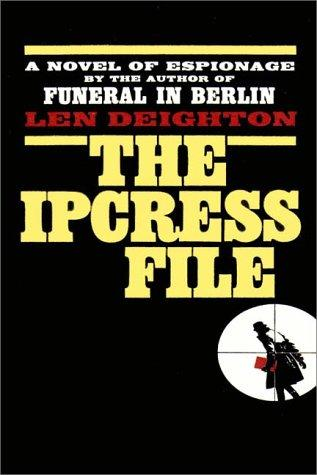

Recommendations for the week of 20 July 2026.
Three distinct growth edges this week. New Wave SF beyond the Golden Age arrives via authors the persona names outright — the Strugatskys — and their coldest idea about contact. Narrative nonfiction reaches well outside the Greece/Rome-and-World-Wars veins into 20th-century American social history, built as three interleaved lives rather than a survey. And the translated non-Western literary shelf gains a named author, Bolaño, in a compressed and formally strange deathbed monologue. The comfort picks rest Discworld this week and spread across three well-loved veins instead — a telepathic murder puzzle, a Golden-Age bell-ringing mystery, and the anti-Bond — each fresh to the shelf, all fun, none sentimental.




